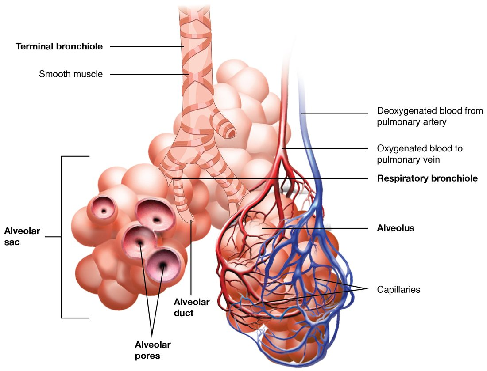

This page covers the pathophysiology of the most common lung disorders: COPD (chronic obstructive pulmonary disease, which includes emphysema and chronic bronchitis), how it differs from asthma, pulmonary edema, and respiratory infections such as pneumonia and tuberculosis. Each one is a failure of something you have already met in this chapter: the airways, the alveoli, the respiratory membrane, the pulmonary capillaries or the defenses of the lung. If you know what normally happens, you can work out what goes wrong.
Four ways a lung can fail
Every breath depends on four steps, and every lung disorder damages at least one of them:
- Ventilation: moving air in and out. It fails when airway resistance rises (asthma, chronic bronchitis), when the lungs lose their recoil (emphysema), when the lungs become stiff (scarring of the lung tissue, called pulmonary fibrosis), or when the pleural seal is broken (pneumothorax).
- Diffusion: gas crossing the respiratory membrane. It fails when the membrane thickens (pulmonary edema, fibrosis) or when its surface area is lost (emphysema).
- Matching air to blood: ventilation–perfusion coupling. It fails when alveoli receive blood but no air (pneumonia, fluid-filled alveoli) or air but no blood (a blood clot blocking a pulmonary artery, a pulmonary embolism).
- Control: the drive to breathe. It fails when the respiratory centers are depressed, as in an opioid overdose.
The rest of this page takes the three disorders this topic adds, and places asthma beside them.
Chronic obstructive pulmonary disease
Mr. Novak, 66, smoked a pack a day for 45 years. For the last few years he has been short of breath climbing stairs, and he coughs up mucus every morning. His spirometry shows that he can breathe out only half his vital capacity in the first second.
Chronic obstructive pulmonary disease (COPD) is long-lasting lung disease in which airflow out of the lungs is persistently limited and does not return fully to normal with treatment. It is one of the leading causes of death worldwide. The main cause is cigarette smoke; others include smoke from indoor cooking and heating fires, workplace dusts and fumes, air pollution and, rarely, an inherited lack of the protective protein alpha-1 antitrypsin.
COPD is diagnosed with spirometry. You met FEV1, the volume you can force out in the first second, and forced vital capacity (FVC), the total you can force out after a full breath in. In obstructive disease, air leaves slowly, so FEV1 falls much more than FVC. COPD is confirmed when FEV1 ÷ FVC is below 0.70 after the person has inhaled a drug that opens the airways.
Worked example 1: reading a spirometry result
Problem. After inhaling albuterol, Mr. Novak's FVC is 3.2 L and his FEV1 is 1.6 L. A healthy man of his age and height would have an FEV1 of about 3.0 L. Does he have airflow obstruction?
- Find the ratio. FEV1 ÷ FVC = 1.6 ÷ 3.2 = 0.50.
- Compare with the cutoff. 0.50 is below 0.70, so air is leaving his lungs too slowly for the volume he can move: obstruction.
- Check reversibility. The result was measured after a drug that opens the airways, so the obstruction persists despite it, which fits COPD rather than asthma.
- Judge severity. His FEV1 is 1.6 ÷ 3.0 = 0.53, about 53% of the predicted value: moderate obstruction by the usual grading (50 to 79% of predicted is moderate; 30 to 49% is severe).
Answer. Yes. A ratio of 0.50 after the drug means persistent airflow obstruction, consistent with COPD.
COPD has two main forms, emphysema and chronic bronchitis. Most people with COPD have some of both.
Emphysema
Emphysema (em- = in, physa- = to blow: "inflated") is the destruction of alveolar walls, so that many small alveoli merge into fewer, larger air spaces. Figure 1 shows the healthy structures it destroys: grape-like clusters of alveoli around alveolar ducts, each wrapped in capillaries, at the end of the smallest bronchioles.

Emphysema develops like this (Figure 2):
- Smoke irritates the lungs and draws in neutrophils and activates alveolar macrophages. This is chronic inflammation.
- These cells release protein-digesting enzymes that break down elastic fibers and other proteins in the alveolar walls.
- Normally, alpha-1 antitrypsin and other protective proteins block those enzymes. Smoke inactivates them, and people who inherit too little alpha-1 antitrypsin get emphysema young, even without smoking.
- With the balance tipped toward digestion, alveolar walls and their capillaries are destroyed faster than they are repaired.
Losing alveolar walls causes two separate problems:
- Less surface for diffusion. Fewer, larger air spaces have much less wall area, and the capillaries in the lost walls are gone too. Oxygen uptake falls, first during exercise and later at rest.
- Loss of elastic recoil, and collapsing airways. Elastic fibers in the alveolar walls do two jobs. Their recoil pushes air out when you breathe out, and they are attached to the outside of the smallest airways, which have no cartilage, pulling them open like guy ropes on a tent. When the fibers are destroyed, recoil weakens, and during expiration the pressure around the small airways squeezes them shut. Air is trapped behind them.
Trapped air has consequences you can predict from the lung volumes in Figure 3. Residual volume and functional residual capacity rise, the lungs are overinflated (hyperinflated), and total lung capacity can rise too. The chest becomes rounder (a "barrel chest") and the diaphragm is pushed flat, which makes it a weaker muscle. Lung compliance rises, because there is less elastic tissue to stretch.
![Two panels on a vertical scale from 0 to 6,000 milliliters. The left panel is a spirogram: a trace of lung volume over time shows small, regular breaths between about 2,500 and 2,900 mL, one deepest possible breath in to 6,000 mL, and one fullest possible breath out to about 1,200 mL. Colored bands behind the trace mark the four volumes: residual volume from 0 to about 1,200 mL, expiratory reserve volume up to about 2,500 mL, tidal volume up to about 2,900 mL, and inspiratory reserve volume up to 6,000 mL. The right panel shows the capacities as bars built from those volumes: inspiratory capacity above functional residual capacity; vital capacity above residual volume; and total lung capacity spanning the whole scale.](../figures/os-22-18.jpg)
People with emphysema often breathe out through pursed lips. The narrow opening at the lips keeps the pressure inside the airways higher during expiration, which holds the collapsing small airways open a little longer and lets more air out.
Chronic bronchitis
Chronic bronchitis (bronch- = windpipe branch, -itis = inflammation) is defined by symptoms: a cough that brings up mucus on most days for at least three months in each of two years in a row, with no other cause. Its mechanism:
- Smoke and other irritants cause long-term inflammation of the bronchi and bronchioles.
- Mucus glands in the airway walls enlarge and goblet cells multiply, so far more mucus is made.
- Smoke damages and shortens the cilia, so the mucociliary escalator clears mucus poorly.
- Mucus pools in the airways, the walls thicken with inflammation and scarring, and the airways narrow. Airway resistance rises and airflow falls.
- Pooled mucus is a good place for bacteria to grow, so infections flare up again and again, and each flare-up worsens the inflammation.
Emphysema, chronic bronchitis and asthma
You met asthma with airway resistance: inflamed airways that overreact to triggers with bronchoconstriction, swelling of the airway wall and extra mucus, often driven by an allergic response involving IgE, mast cells and eosinophils. All three are obstructive, and all three lower FEV1 ÷ FVC. They differ in where the problem lies and whether it reverses.
| Emphysema | Chronic bronchitis | Asthma | |
|---|---|---|---|
| Main site | Alveolar walls | Bronchi and bronchioles | Bronchi and bronchioles |
| Main change | Destruction of alveolar walls and elastic fibers | Too much mucus, damaged cilia, thickened airway walls | Airway inflammation with bronchoconstriction that comes and goes |
| Cause of the obstruction | Small airways collapse during expiration for lack of elastic support | Mucus and thickened walls narrow the airways | Smooth muscle contraction, wall swelling and mucus narrow the airways |
| Reversible with drugs that open the airways? | No | Little | Largely, especially between attacks |
| Typical onset | Middle to older age, after years of smoking | Middle to older age, after years of smoking | Often in childhood; can start at any age |
| Main trigger or cause | Smoke; inherited lack of alpha-1 antitrypsin | Smoke and other inhaled irritants | Allergens, exercise, cold air, infections, irritants |
| Lung compliance | Raised | Near normal | Near normal |
| Gas diffusion across the membrane | Reduced: surface area is lost | Near normal | Normal |
| Cough and mucus | Little | Daily cough with mucus | Cough and wheeze during attacks |
Some people have both asthma and COPD, and severe long-standing asthma can leave some airway narrowing that no longer reverses.
How COPD disturbs gas exchange
- Uneven ventilation. Some alveoli sit behind narrowed or collapsing airways and are poorly ventilated, while their capillaries still receive blood. This ventilation–perfusion mismatch is the main cause of low blood oxygen (hypoxemia) in COPD.
- Carbon dioxide retention. Early on, the person breathes harder and keeps PCO2 normal. As the disease worsens, the work of breathing becomes too great, and PCO2 rises and stays high. The kidneys then hold on to extra bicarbonate over days, which brings pH back toward normal.
- Pulmonary hypertension. Low alveolar oxygen causes hypoxic pulmonary vasoconstriction. When it happens throughout the lungs for years, pressure in the pulmonary arteries rises, the right ventricle has to push against a higher afterload, and it thickens and eventually fails. Right-sided heart failure caused by lung disease is called cor pulmonale (cor = heart, pulmon- = lung).
- Polycythemia. Long-term hypoxemia makes the kidneys release more erythropoietin, which raises the red blood cell count. This carries more oxygen but thickens the blood.
Oxygen for people with COPD
A person with severe COPD and a high PCO2 who is given a lot of oxygen can see their PCO2 rise further and become drowsy. The evidence-based explanation, from the last topic, has two parts. First, oxygen reverses hypoxic pulmonary vasoconstriction in badly ventilated parts of the lung, so more blood flows past alveoli that are barely ventilated and ventilation–perfusion mismatch worsens. Second, the Haldane effect: hemoglobin loaded with oxygen holds less carbon dioxide, so PCO2 rises. Loss of a "hypoxic drive to breathe" plays at most a small part: ventilation falls only slightly when oxygen is given.
The practical rule is the same either way. Oxygen is given to a hypoxic person with COPD in controlled amounts, aiming for a target saturation (often 88–92%), with close watching of breathing and alertness. Oxygen is never withheld from a hypoxic patient.
Pulmonary edema
Mrs. Ito, 74, has a weak left ventricle after two heart attacks. Tonight she woke up gasping, unable to breathe lying down, and coughing up pink, frothy fluid. Her lungs are filling with fluid.
Pulmonary edema (pulmon- = lung, oidema = swelling) is the buildup of fluid in the lungs: first in the interstitial space around the alveoli and capillaries, then in the alveoli themselves.
Why healthy lungs stay dry
Fluid moves out of capillaries by the balance of hydrostatic and colloid osmotic pressures you met with capillary exchange. The pulmonary circuit is a low-pressure circuit: pulmonary capillary hydrostatic pressure is only about 10 mm Hg, well below the blood colloid osmotic pressure of about 25 mm Hg. But the lung's interstitial fluid sits at a slightly negative pressure and holds a fair amount of protein, so a little fluid still filters out, as in every capillary bed, and the lymphatic vessels of the lung carry it away. They can increase their flow several-fold before fluid starts to build up.
Two causes
| Cardiogenic pulmonary edema | Noncardiogenic pulmonary edema | |
|---|---|---|
| What goes wrong | Pressure in the pulmonary capillaries rises | The capillary wall and respiratory membrane become leaky |
| Usual cause | Left-sided heart failure; a narrowed or leaking mitral valve | Sepsis, pneumonia, inhaled smoke or toxic gases, near-drowning, severe injury |
| Mechanism | Blood backs up from the left heart into the pulmonary veins and capillaries, raising capillary hydrostatic pressure | Inflammation damages the membrane, so fluid and proteins leak out even at normal pressure |
| Protein in the edema fluid | Low | High |
| Treatment aims | Lower the pressure: sit upright, reduce fluid volume, help the heart pump | Treat the cause and support breathing while the membrane heals |
What the fluid does
- Interstitial stage. Filtration outpaces lymph flow, and fluid collects around the alveoli and small airways. The respiratory membrane thickens, so diffusion slows. Oxygen is affected more than carbon dioxide, because carbon dioxide is about 20 times more soluble and diffuses far more readily.
- Stiffer lungs. Fluid in the lung tissue lowers compliance, so each breath takes more work.
- Sensory receptors in the alveolar walls detect the fluid and cause rapid, shallow breathing and a feeling of breathlessness.
- Alveolar stage. Fluid floods alveoli, which then receive blood but no air. That blood leaves the lungs without being oxygenated, and hypoxemia worsens. Fluid in the airways mixes with air into froth, sometimes tinged pink by red blood cells, and makes crackling sounds heard with a stethoscope.
Why Mrs. Ito cannot lie flat: lying down moves blood from the legs and abdomen into the chest, raising venous return to the heart. Her weak left ventricle cannot pump out the extra volume, so pressure in her pulmonary capillaries rises further. Sitting upright lets blood pool lower in the body again. Breathlessness when lying flat is called orthopnea (orth- = straight, upright; -pnea = breathing), because it is relieved by sitting upright.
Respiratory infections
Respiratory infections are infections anywhere along the respiratory tract. Most are upper respiratory infections, such as the common cold, which infect the nose and pharynx and clear up on their own. The lower respiratory infections below reach the alveoli, where they interfere with gas exchange.
Pneumonia
Pneumonia (pneumon- = lung, -ia = condition) is infection of the alveoli and the tissue around them. The most common causes are viruses, such as influenza and the virus that causes COVID-19, and bacteria, most often Streptococcus pneumoniae; fungi cause it mainly in people with weakened immunity. Microbes reach the alveoli when they are breathed in, or when mouth and throat contents are inhaled into the lungs, which is more likely in people who cannot swallow or cough well.
What happens in the lung:
- Microbes get past the mucociliary escalator and the alveolar macrophages and multiply in the alveoli.
- Inflammation follows. Capillaries leak fluid and plasma proteins, and neutrophils pour in.
- The alveoli fill with this fluid, with white blood cells, fibrin and red blood cells. Part of a lung becomes solid instead of air-filled; this is called consolidation.
- Blood still flows past the filled alveoli but meets no air. This blood returns to the left heart unoxygenated and lowers arterial PO2. Hypoxic pulmonary vasoconstriction redirects some blood away from the infected area, which limits the damage.
- The person has fever, a cough that often brings up sputum, rapid breathing, and sometimes a sharp chest pain on breathing in when the infection reaches the pleura.
Extra oxygen helps hypoxemia from pneumonia less than you might expect. Blood that passes filled alveoli never meets the extra oxygen, so only the blood passing healthy alveoli benefits, and that blood was already nearly saturated. People at highest risk include infants, adults over 65, smokers, and people with lung disease, heart failure or weakened immunity. Vaccines against influenza, S. pneumoniae and COVID-19 lower the risk.
Tuberculosis
Tuberculosis (TB) (tubercul- = small swelling, -osis = condition) is infection by the bacterium Mycobacterium tuberculosis. It spreads through the air: a person with active lung TB coughs out tiny droplets that stay floating for hours, and another person breathes them in.
- The bacteria reach the alveoli, and alveolar macrophages engulf them.
- Unlike most bacteria, they survive and multiply inside the macrophages.
- After a few weeks, T cells recognize the infection and activate the macrophages, which can then hold the bacteria in check.
- Activated macrophages and lymphocytes wall off the infected area in a small ball of cells called a granuloma (granul- = small grain, -oma = mass), often with dead, cheese-like tissue at its center.
- In most people, this contains the infection for life. The bacteria stay alive but dormant: latent TB infection.
- If immunity weakens later, for example with HIV, some cancer treatments, diabetes or old age, the bacteria can break out and cause active TB, which destroys lung tissue and can form cavities.
| Latent TB infection | Active TB disease | |
|---|---|---|
| Bacteria | Alive but held in check inside granulomas | Multiplying and destroying tissue |
| Symptoms | None | Cough for weeks, sometimes with blood; fever, night sweats, weight loss |
| Spreads to others? | No | Yes, when the lungs or airways are affected |
| Skin or blood test for TB | Usually positive | Usually positive |
| Chest X-ray | Usually normal, or a small healed scar | Usually abnormal |
| Treatment | A shorter course of one or two drugs to prevent active disease | Several drugs together for about four to six months or longer |
About a quarter of the world's population is thought to carry latent TB infection. Active TB is treated with several drugs at once for months, because the slow-growing bacteria are hard to kill and a single drug lets resistant bacteria survive. Stopping treatment early is a major cause of drug-resistant TB.
The respiratory system as a whole
Every disorder on this page reaches beyond the lungs. COPD strains the right ventricle and raises the red blood cell count. Left-sided heart failure floods the lungs. Pneumonia can spread into the blood and cause sepsis. Carbon dioxide retention shifts blood pH, which the kidneys then work to correct. To reason about any lung disease, ask which step it breaks (ventilation, diffusion, matching of air to blood, or control), then follow the effects through the gases, the pH, the heart and the blood.